Orbe Arcano · admissão DRAFT v01
0.4.0/orbe-arcano-admission-v01/a431fa9+local-498dd8dce1bb
24 capturas Arcano/misto +23 de regressão Radiante; não é playtest humano. Roteiro/atalhos
Arcano/misto
raio_enfraquecedor-flight
eight-directions
flight-phase-0

flight-phase-1
flight-phase-2
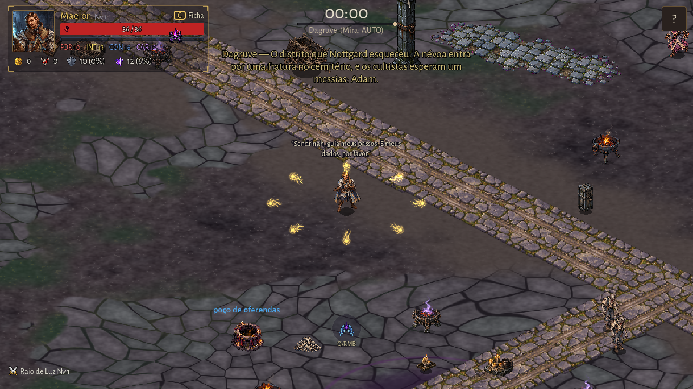
flight-phase-3
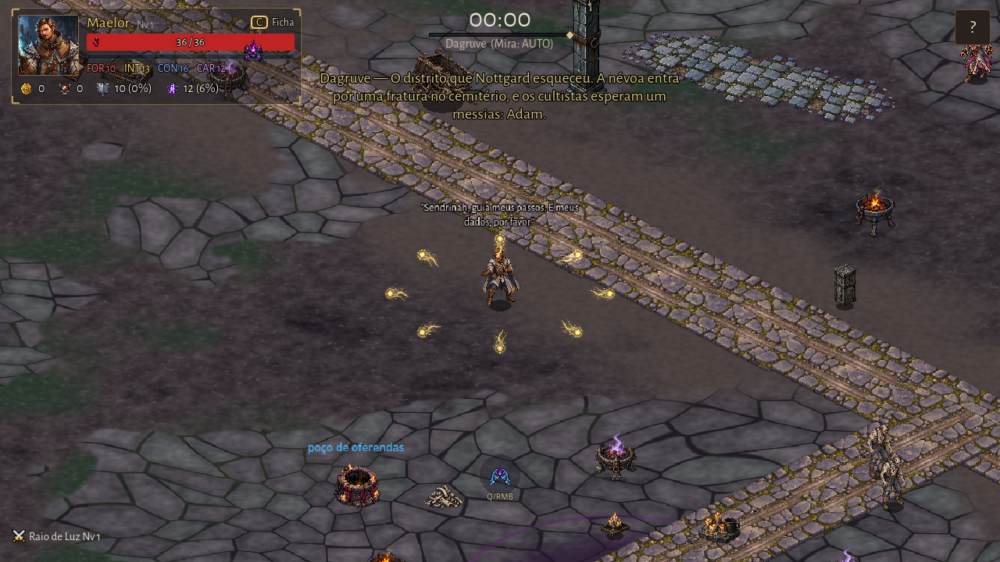
flight-loop-return
raio_enfraquecedor-impact
impact-phase-0
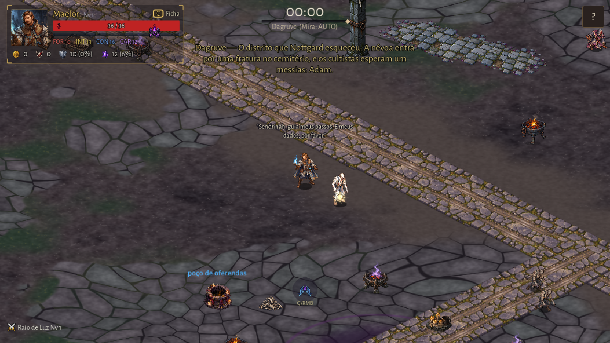
impact-phase-1
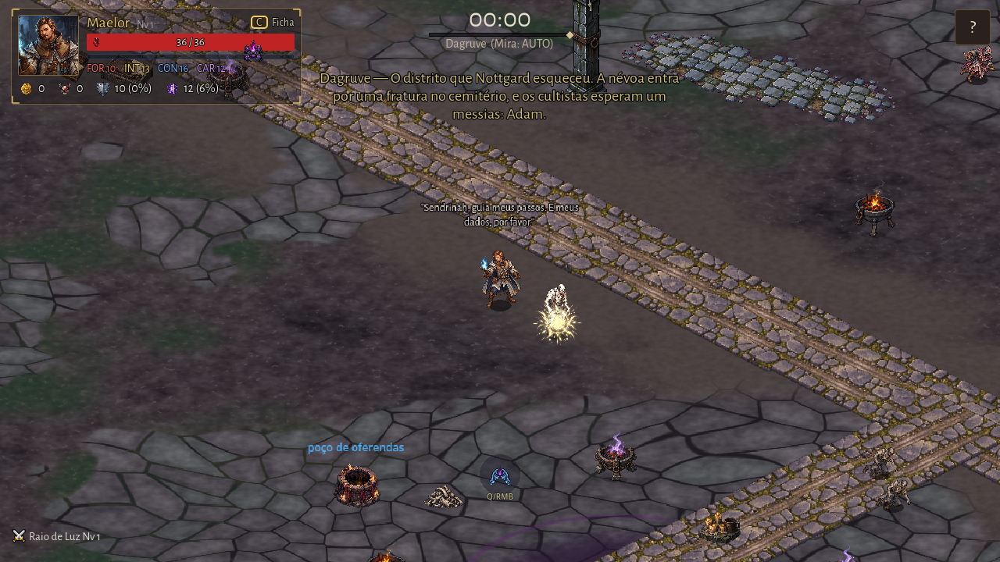
impact-phase-2
impact-phase-3
tint-lliira
tint-tou-um
reduced-fallback
missing-texture-fallback
unsupported-magic-fallback
dominar_pessoa-flight
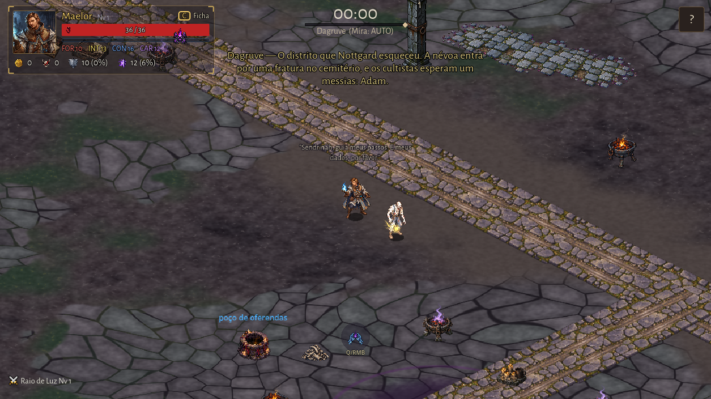
dominar_pessoa-impact
cajado_dos_desejos-flight
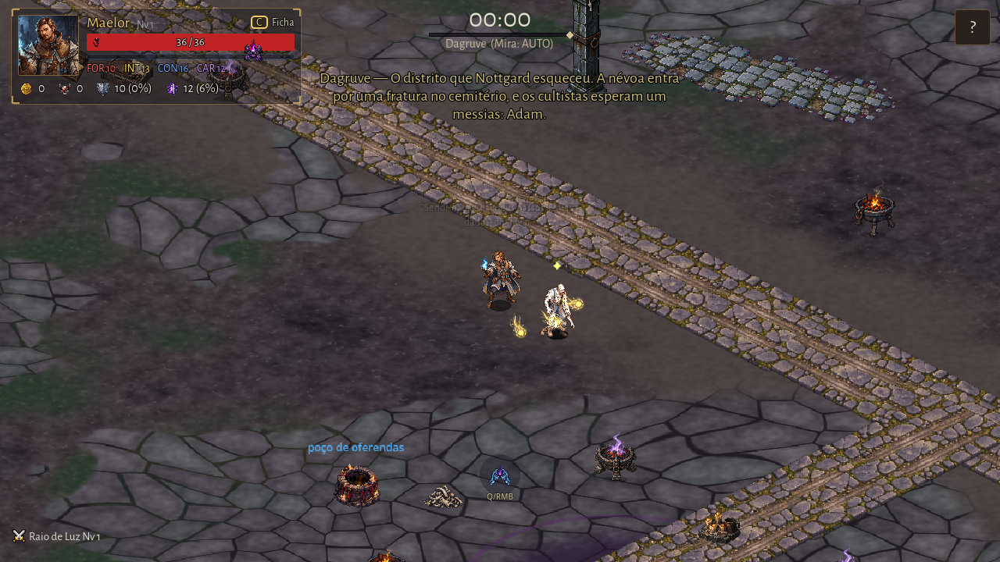
cajado_dos_desejos-impact
mixed-arcane-radiant
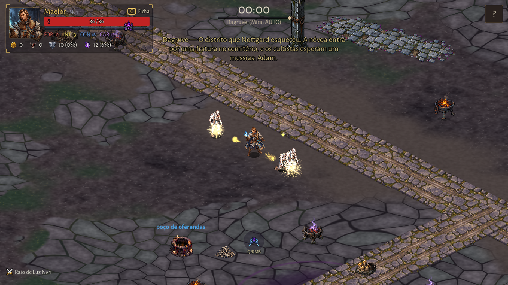
regression-sentenca_de_lliira
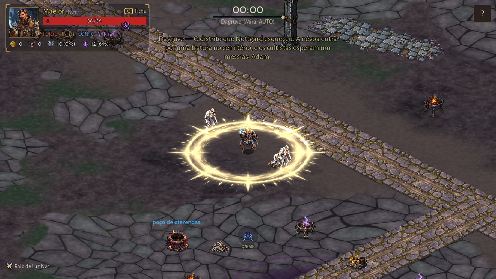
regression-ampulheta
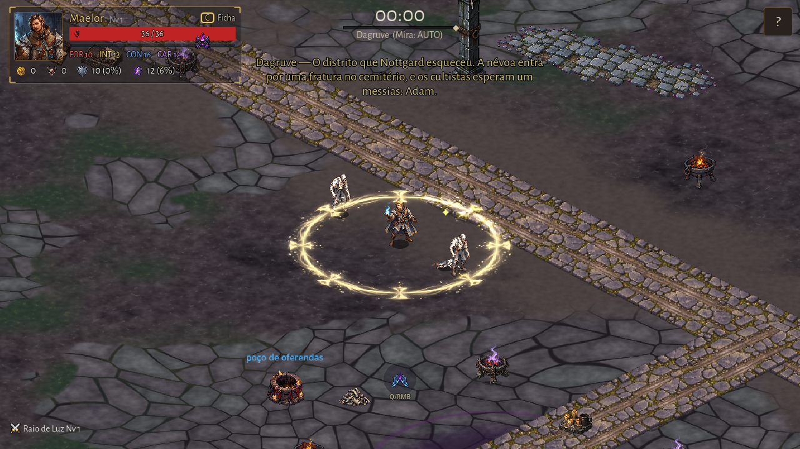
Regressão Radiante
raio_de_luz-flight
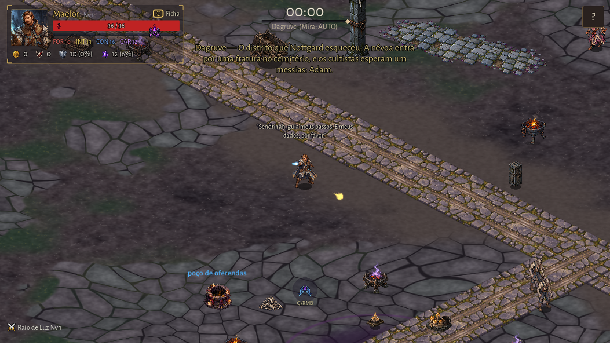
eight-directions
flight-phase-0

flight-phase-1
flight-phase-2
flight-phase-3
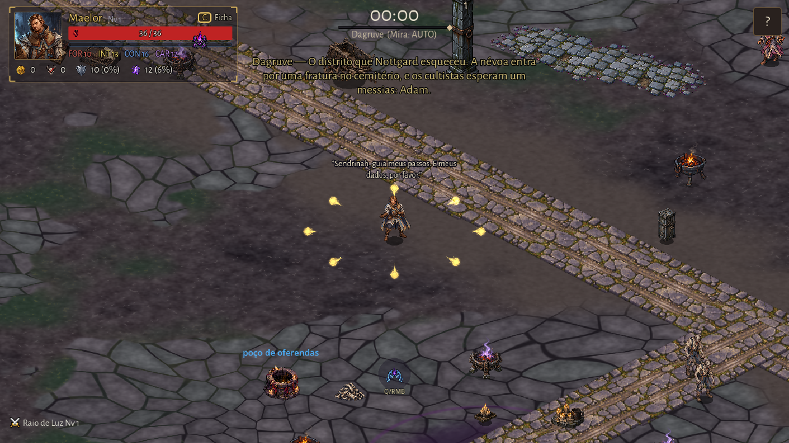
flight-loop-return
raio_de_luz-impact
impact-phase-0
impact-phase-1
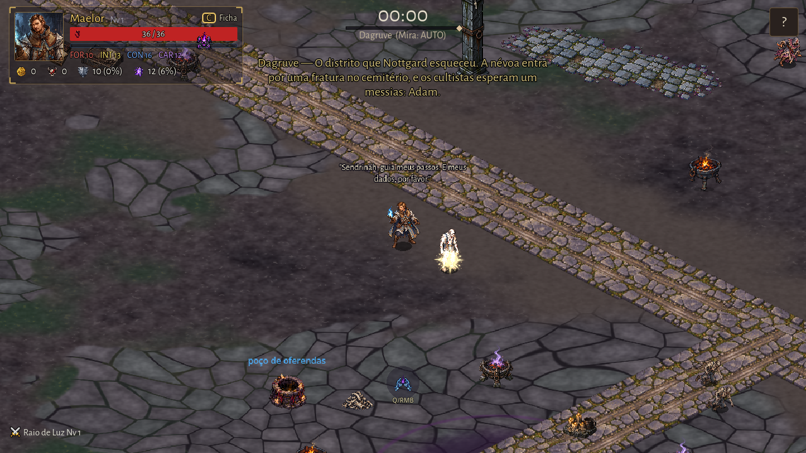
impact-phase-2
impact-phase-3
tint-lliira
tint-tou-um
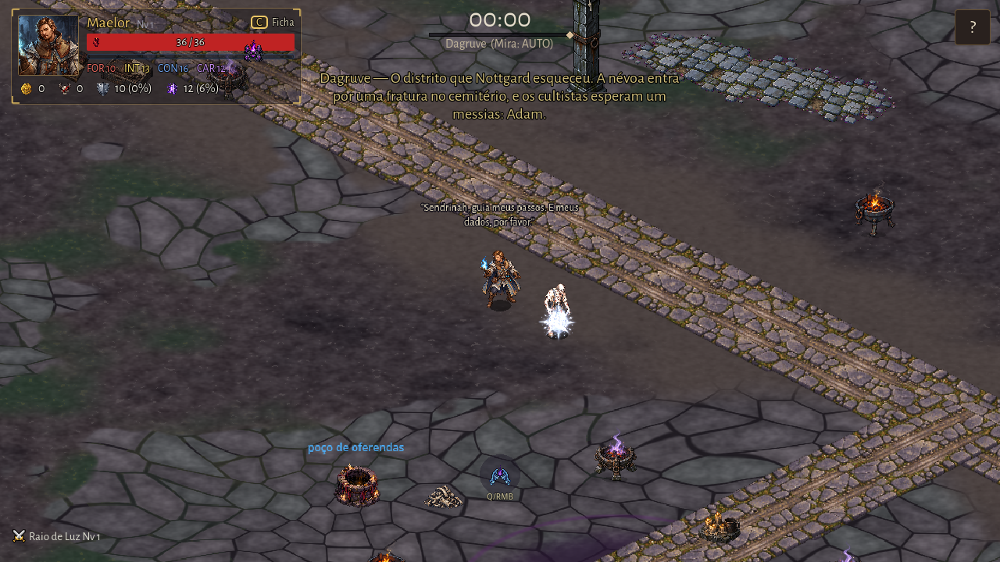
reduced-fallback
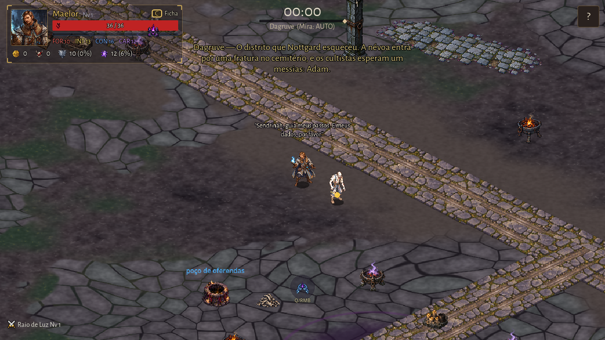
missing-texture-fallback
unsupported-magic-fallback
luz_mais_pura-flight
luz_mais_pura-impact
marca_da_retidao-flight
marca_da_retidao-impact
regression-sentenca_de_lliira
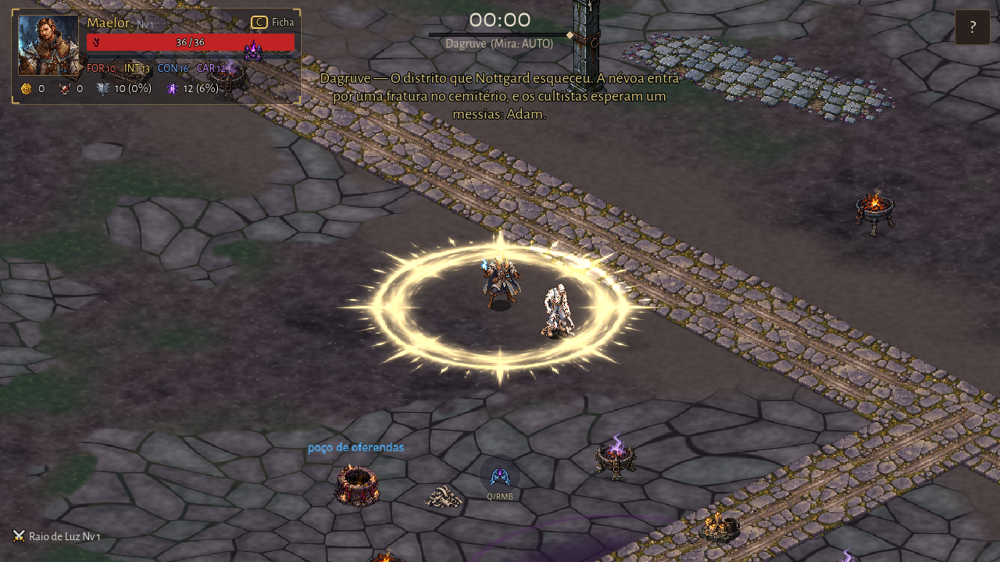
regression-ampulheta
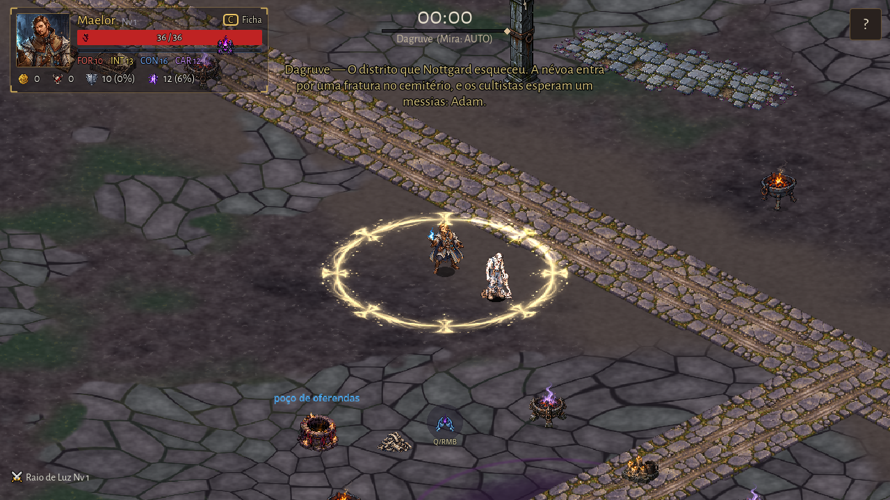